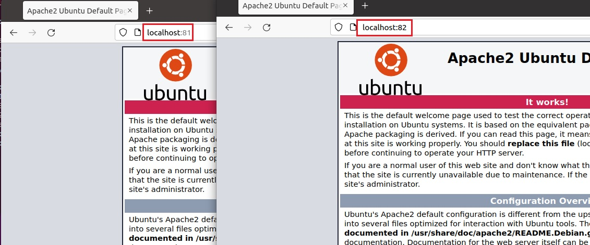

Docker : First Steps
Lab 1 : Installation
According to Docker Docs, Docker Engine can be installed in different ways, depending on our needs: - Most users set up Docker’s repositories and install from them, for ease of installation and upgrade tasks. This is the recommended approach.
-
Some users download the DEB package and install it manually and manage upgrades completely manually. This is useful in situations such as installing Docker on air-gapped systems with no access to the internet.
-
In testing and development environments, some users choose to use automated convenience scripts to install Docker.
1. Set up the repository (Docker CE):
- Install packages to allow apt to use a repository over HTTPS.
- Add Docker’s official GPG key:
sudo add-apt-repository "deb [arch=amd64] https://download.docker.com/linux/ubuntu $(lsb_release -cs) stable"
2. Install Docker
Executing the Docker Command Without Sudo (Optional):Note
You have to Log out and log back in so that your group membership is re-evaluated.
Configure Docker to start on boot
Using the Docker Command- Installation options are available on Docker Docs for Centos
- Install using the repository
-
Follow the instructions in docker official documentation https://docs.docker.com/desktop/windows/install
-
Enable the WSL 2 feature on Windows. For detailed instructions, refer to the Microsoft documentation.
- Download and install the Linux kernel update package.
- Download dokcer desktop installer from Docker Hub then install it by running Docker Desktop Installer.exe as administrator
Lab 2: Build and Manager images (Dockerfile)
- Docker offers two types of images:
- OS images (ubuntu, debian, etc)
- Dockerized Services /Apps Images (http, nodejs, mongodb, etc)
-
Images are stored in the Docker Registry (Local, or remote like Docker Hub and Docker Store)
-
Different methods to create Docker image :
- Image pull : loads an archive of files, as a base layer
- Container commit : create new couche (+ image) from current container
- Image build : construction form a Dockerfile (commands list)
Working with Docker Images :
Search for images available on Docker Hub:
Note
if you are using Windows , you can use cmd and run all the following commands without 'sudo'
Download ubuntu image to your computer
sudo docker pull ubuntu
Using default tag: latest
latest: Pulling from library/ubuntu
ea362f368469: Pull complete
Digest: sha256:b5a61709a9a44284d88fb12e5c48db0409cfad5b69d4ff8224077c57302df9cf
Status: Downloaded newer image for ubuntu:latest
docker.io/library/ubuntu:latest
sudo docker images
REPOSITORY TAG IMAGE ID CREATED SIZE
ubuntu latest d13c942271d6 3 weeks ago 72.8MB
sudo docker images
REPOSITORY TAG IMAGE ID CREATED SIZE
ubuntu 20.04 d13c942271d6 3 weeks ago 72.8MB
ubuntu latest d13c942271d6 3 weeks ago 72.8MB
Note
- d (detach): Run container in background and print container ID
- i (interactive): Keep STDIN open even if not attached
- t (tty): Allocate a pseudo-TTY
Use the following combination of keys instead: CTRL + P + Q. This command allows to leave the container without turning it off. If you use the exit command again within the container, it will shut down
Build Docker Images
-
Write a Dockerfile (Openssh and Apache2)
$ echo \ "FROM ubuntu:20.04 #Install Openssh Server, Apache2 and git ARG DEBIAN_FRONTEND=noninteractive RUN apt-get update && apt-get install -y openssh-server git apache2 vim #Configure ssh RUN mkdir /var/run/sshd RUN echo 'root:root' | chpasswd RUN sed -i 's/PermitRootLogin prohibit-password/PermitRootLogin yes/' /etc/ssh/sshd_config #Expose SSH and HTTP ports EXPOSE 22 80">>Dockerfile -
Build image
List all local docker imagesSending build context to Docker daemon 22.96MB Step 1/6 : FROM ubuntu:20.04 ---> 4a689991aa24 Step 2/6 : RUN apt-get update && apt-get install -y openssh-server git apache2 python vim Removing intermediate container 02e7b71e66bf ---> a02abb273ca1 Step 3/6 : RUN mkdir /var/run/sshd ---> Running in 7debc3bd848a ^[[ARemoving intermediate container 7debc3bd848a ---> 43701b93496d Step 4/6 : RUN echo 'root:root' | chpasswd ---> Running in 4958eb98f69b Removing intermediate container 4958eb98f69b ---> 86051bdd6380 Step 5/6 : RUN sed -i 's/PermitRootLogin prohibit-password/PermitRootLogin yes/' /etc/ssh/sshd_config ---> Running in df9955a1969b Removing intermediate container df9955a1969b ---> ce0c596cd18b Step 6/6 : EXPOSE 22 80 ---> Running in 1ef65145106a Removing intermediate container 1ef65145106a ---> 4fdd24f1b727 Successfully built 4fdd24f1b727 Successfully tagged myimage:latestBuild new version 'v1.0'sudo docker images REPOSITORY TAG IMAGE ID CREATED SIZE myimage latest d83e3fd00475 40 seconds ago 365MB ubuntu 20.04 d13c942271d6 3 weeks ago 72.8MB ubuntu latest d13c942271d6 3 weeks ago 72.8MBList all local docker imagessudo docker build -t="myimage:v1.0" . Sending build context to Docker daemon 2.048kB Step 1/7 : FROM ubuntu:20.04 ---> d13c942271d6 Step 2/7 : ARG DEBIAN_FRONTEND=noninteractive ---> Using cache ---> 1382eae51bd9 Step 3/7 : RUN apt-get update && apt-get install -y openssh-server git apache2 vim ---> Using cache ---> b46e2d48bebb Step 4/7 : RUN mkdir /var/run/sshd ---> Using cache ---> c5ac495fe893 Step 5/7 : RUN echo 'root:root' | chpasswd ---> Using cache ---> aed6d12fa09d Step 6/7 : RUN sed -i 's/PermitRootLogin prohibit-password/PermitRootLogin yes/' /etc/ssh/sshd_config ---> Using cache ---> 89c476d90de8 Step 7/7 : EXPOSE 22 80 ---> Using cache ---> d83e3fd00475 Successfully built d83e3fd00475 Successfully tagged myimage:v1.0
Lab 3 : Manage Containers (Life Cycle, SSH, Port Forwarding)
Create One container
- Remove all existing containers
Create a container with the new image
sudo docker run -it --name docker1 myimage root@8cdc395b34ca:/# exit exit docker ps CONTAINER ID IMAGE COMMAND CREATED STATUS PORTS NAMES docker start docker1 docker1 docker exec -d docker1 ls docker attach docker1 root@8cdc395b34ca:/# root@8cdc395b34ca:/# exit exit sudo docker run -dt --name docker2 myimage bin/sh -c "while true; do echo hello world; sleep 1; done" 7f192eb6f5bf7079843b30e1f7d3b2e7b4f8f12bb7c48a63101760e814633c07 # Display Docker2 logs sudo docker logs docker2 hello world hello world hello world hello world docker top docker2 UID PID PPID C STIME TTY TIME CMD root 18654 18630 0 17:50 pts/0 00:00:00 bin/sh -c while true; do echo hello world; sleep 1; done root 18908 18654 0 17:52 pts/0 00:00:00 sleep 1 # Stop the VMs sudo docker stop docker1 docker2 # Delete the VMs sudo docker rm docker1 docker2
Create 2 containers with port forwarding:
There are two methods for assigning network ports to the Docker host:
- Docker can randomly assign a port (in the range 32768-61000) from the Docker host that it will map to the port 80 of the container.
- It is also possible to specify a port (for ex. 81 and 82)
# Delete all containers
sudo docker rm -f $(sudo docker ps -a -q)
# Create 2 new containers
sudo docker run -dt -p 81:80 --name docker1 myimage
sudo docker run -dt -p 82:80 --name docker2 myimage
sudo docker ps
sudo docker info
Access with SSH:
Start SSH Daemon
- Check IP Address of containerssudo docker inspect docker1
# get only the Ipv4 Adress
sudo docker inspect --format '{{ .NetworkSettings.IPAddress }}' docker1 172.17.0.2
172.17.0.2
ssh root@172.17.0.2
# You can change the root password by running the following docker command:
docker exec -itu 0 docker1 passwd
Start Apache2 Server:
- Start Apache2 server
sudo docker exec -d docker1 /etc/init.d/apache2 start
sudo docker exec -d docker2 /etc/init.d/apache2 start
- On browser try to connect :
-
http://localhost:81
-
http://localhost:82

Delete all containers (runining and stoped)
Running web application: